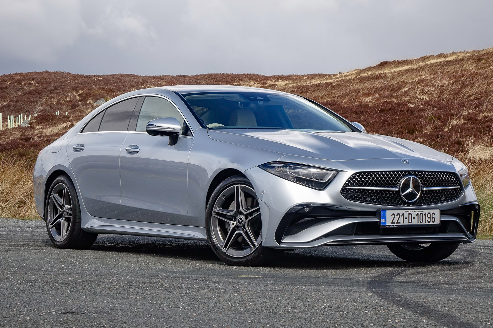
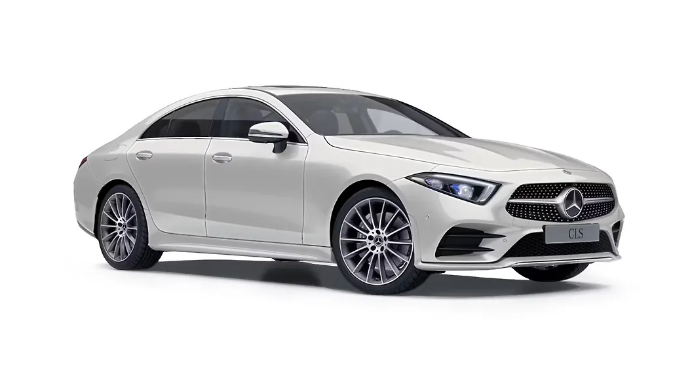

MERCEDES-BENZ
Mercedes-Benz CLS
جميع نسخ مرسيدس CLS مع المواصفات الرسمية مرتبة في صفحة واحدة، لتسهيل المقارنة بين جميع الإصدارات.
جميع نسخ مرسيدس CLS مع المواصفات الرسمية مرتبة في صفحة واحدة، لتسهيل المقارنة بين جميع الإصدارات.

| المحرك | 2.0 لتر ديزل تيربو |
| عدد الأسطوانات | 4 |
| القوة | 194 حصان |
| عزم الدوران | 400 نيوتن متر |
| ناقل الحركة | 9G-TRONIC |
| نظام الدفع | دفع خلفي |
| التسارع (0-100) | 7.5 ثانية |
| السرعة القصوى | 237 كم/س |
| عدد المقاعد | 5 |
| نوع الوقود | ديزل |

| المحرك | 2.0 لتر ديزل تيربو |
| عدد الأسطوانات | 4 |
| القوة | 265 حصان |
| عزم الدوران | 550 نيوتن متر |
| ناقل الحركة | 9G-TRONIC |
| نظام الدفع | 4MATIC |
| التسارع (0-100) | 6.4 ثانية |
| السرعة القصوى | 250 كم/س |
| عدد المقاعد | 5 |
| نوع الوقود | ديزل |
| المحرك | 3.0 لتر 6 أسطوانات مستقيمة تيربو + نظام هجين خفيف |
| عدد الأسطوانات | 6 |
| القوة | 367 حصان |
| عزم الدوران | 500 نيوتن متر |
| ناقل الحركة | 9G-TRONIC |
| نظام الدفع | 4MATIC |
| التسارع (0-100) | 4.8 ثانية |
| السرعة القصوى | 250 كم/س |
| عدد المقاعد | 5 |
| نوع الوقود | بنزين |

| المحرك | 3.0 لتر 6 أسطوانات مستقيمة تيربو + نظام هجين خفيف |
| عدد الأسطوانات | 6 |
| القوة | 435 حصان |
| عزم الدوران | 520 نيوتن متر |
| ناقل الحركة | AMG SPEEDSHIFT TCT 9G |
| نظام الدفع | AMG Performance 4MATIC+ |
| التسارع (0-100) | 4.5 ثانية |
| السرعة القصوى | 250 كم/س (270 كم/س اختيارياً) |
| عدد المقاعد | 5 |
| نوع الوقود | بنزين |